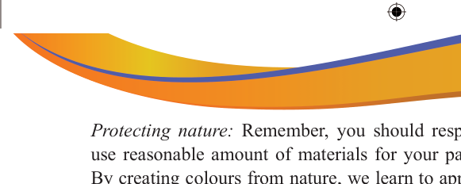

Protecting nature: Remember, you should respect nature; therefore, take and use reasonable amount of materials for your painting to avoid material waste.
By creating colours from nature, we learn to appreciate the beauty of the world around us and become more connected with nature.

Activity 3.6
Create water colours by using variety of flowers and leaves, soil and fruits, vegetable and roots collected from your environment.
Exercise 3.6
Search for more information from society members and various sources including online about the procedures for making colours from the surroundings.
Then, write down the procedures for making colours from the following:
(a) Flowers and leaves
(b) Soil
Revision Exercise
1. The use of colour in art is not arbitrary; it is a deliberate choice made by the artist to communicate a message or emotion to the viewer. On this view, explain why the artist portrays messages through the use of colours.
2. You are an artist and have been assigned to make a painting on one of the school walls. Provided that you have been given a budget of Tshs 100,000/= for the materials and equipment required, identify the set of materials and equipment that you would select to buy for this painting assignment.
3. Baraka found it funny when he saw a young child playing with colours. He saw new colours emerging when two different colours were mixed. Now, with examples propose what happened when the child did the following: